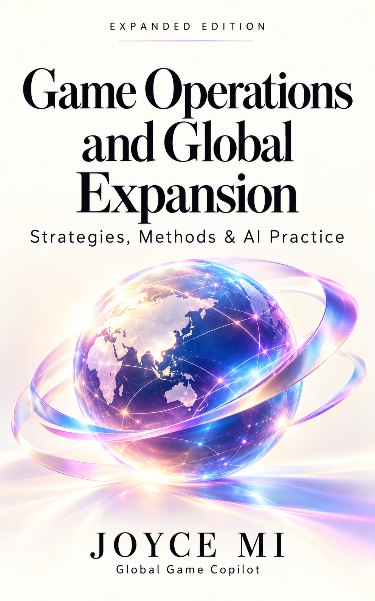

Global, not generic
Product, market and culture belong in one conversation.

GOOD GAMES. A BRIGHTER WORLD.
Global Game Copilot
Strategy · Monetization · Global Publishing · AI
From product judgment to global execution. I connect games, data, people and AI to turn ambitious ideas into operating businesses.

Better Games.
A Kinder World.
GLOBAL PERSPECTIVE · HUMAN SPARK
15+years in games & product¹
10+studios · 500+ collaborators¹
Microsoft · Tencent
Zynga · GameloftCareer experience
Game OperationsAuthor & framework builder
ABOUT JOYCE
I’m Joyce Mi, founder of GGC. My work connects category strategy and flagship-product development with the operating systems underneath: data, monetization, LiveOps, global publishing and teams.
Earlier work across Microsoft, Tencent, Zynga and Gameloft shaped a perspective that is both analytical and hands-on. Today I’m applying it to games and AI-native consumer experiences.
Explore career & evidence
Product, market and culture belong in one conversation.
A clear decision, an owner and a working next step.
Games and AI should create more human possibility.
“Better Games.
A Kinder World.”
EXECUTIVE PROFILE
Senior game experience matters when the work is not a single task but a chain of product, growth, publishing and operating decisions.
WHAT JOYCE CAN OWN
Joyce connects category strategy, product and R&D interface, monetization, LiveOps, UA, global publishing, data and organization. The role can be advisory, fractional executive or a long-term strategic growth partnership.
PORTFOLIO ECOSYSTEM
AI-native products and knowledge systems across games, education, culture, wellness, science and lifestyle. Each project is a real operating surface — not a slide-deck concept.
Global game growth, publishing, monetization, LiveOps and executive partnership.
Visit project ↗AI · Revenue · SMEFive self-serve revenue copilots for lead generation, pricing, conversion, opportunity discovery and revenue operations.
Visit project ↗Education · Story · FamilyA child-friendly Bible learning product built around story, reflection, exploration and family connection.
Visit project ↗Culture · Text · EvidenceA bilingual Buddhist knowledge atlas connecting texts, concepts, versions, people, places, timelines and evidence.
Visit project ↗Wellness · Nature · EvidenceA global map and timeline connecting healing traditions, nature-based practices, sensory modalities and modern evidence.
Visit project ↗Science · Learning · InteractionA bilingual quantum-learning atlas with interactive experiments, concepts, stories, evidence and learning journeys.
Visit project ↗Lifestyle · Fashion · TravelA playful-premium lifestyle brand moving across home, work, travel, resort and after-hours.
Visit project ↗CLIENT RESULTS / KPI
成本、ROI、ARPU、付费转化与验证周期：先看结果，再看怎样做到。Cost, ROI, ARPU, payer conversion and validation time: results first, then the operating work behind them.
泛娱乐公司 · Arcade游戏Entertainment company · Arcade game
游戏业务不足一年。通过AI市场及竞品研究，重定位产品与商业化策略；投放成本降至原来的30%，ROI为原来的2倍。With less than a year in games, the client used AI-assisted market and competitor research to reposition its product and monetization. Ad cost fell to 30% of its previous level and ROI doubled.
来源：AI商业化BP · P08Source: original GGC business presentation
创业游戏公司 · 海外商业化Game startup · Overseas monetization
海外ROI未跑正、内购转化低。调整虚拟商品推荐、付费点和转化路径后，核心地区ROI开始跑正，并落地版金及预付款。Overseas ROI was negative and in-app purchase conversion was low. Changes to virtual-goods recommendations, offers and purchase paths increased ARPU and payer conversion; key markets moved to positive ROI, with licensing and advance payments secured.
来源：AI商业化BP · P08Source: original GGC business presentation
会员制业务 · 游戏化经营Membership business · Gamified operations
以任务、累计消费奖励、社交传播及AI行为反馈改造转化路径，60天形成游戏化模块，支持本地及国际会员。Tasks, cumulative-spend rewards, social sharing and AI-assisted behavioral feedback reshaped conversion. A gamification module serving local and international members was completed in 60 days.
来源：AI商业化BP · P18Source: original GGC business presentation
自研AI游戏SOP工具 · 研发验证Proprietary AI game SOP tools · Validation
3天完成20多个交互Demo，1天完成App上线，取得首轮真实留存与LTV数据。Produced 20+ interactive demos in three days, launched an app in one day and obtained first-round retention and LTV data.
来源：AI商业化BP · P18Source: original GGC business presentation
出海产品 · KOL自动化分发Overseas products · Automated KOL distribution
3天触达10,000多个本地KOL；3,000元获得10,000多个有效用户转化。该数字沿用原项目的有效转化定义，不等同付费用户数。Reached 10,000+ local KOLs in three days. RMB3,000 delivered 10,000+ effective user conversions under the project’s original conversion definition; this is not a paying-user count.
来源：AI商业化BP · P18Source: original GGC business presentation
超轻休闲游戏发行公司Hypercasual / casual publisher
项目筹备2年、停滞半年。约1周半建立产品引入流程，重启发行与商业化，1个月投产跑正。After two years of preparation and six stalled months, a product-intake process was established in about 1.5 weeks. Publishing and monetization restarted, reaching positive returns in one month.
来源：业务介绍BP v1.4 · P17Source: original GGC business presentation
区块链游戏 · 经营重整Blockchain game · Operating turnaround
重建工作室、完成产品交接，协同运营、研发及市场，恢复收入增长。Rebuilt the studio and product handover process, aligning operations, development and marketing to restore revenue growth.
来源：业务介绍BP v1.4 · P17Source: original GGC business presentation
App公司 · 海外业务App company · Overseas operations
对接渠道与投放资源，调整推广、传播及产品体验，接手后2个月跑正。Connected channels and media resources, then improved promotion, distribution and the product experience to achieve positive returns within two months.
来源：业务介绍BP v1.4 · P17Source: original GGC business presentation
直播与游戏 · 海外发行Live entertainment & games · Overseas publishing
1个月建立发行运营、商务团队与平台；引入10余款产品，上线6款，其中3款跑正。Built the publishing, operations and BD team and platform in one month. Sourced 10+ titles, launched six and brought three to positive returns.
来源：业务介绍BP v1.4 · P17Source: original GGC business presentation
休闲游戏发行公司 · CP供给Casual publisher · Developer supply
梳理细分品类CP、建立发行及投放规范，6周开始接入CP并形成投放产出。Mapped category-specific developers and built publishing and media standards, beginning developer onboarding and campaign output within six weeks.
来源：业务介绍BP v1.4 · P17Source: original GGC business presentation
中型非游戏公司 · 新游戏出海Mid-sized non-game company · New overseas game
游戏研发超过一年。重做用户定位、产品市场适配、数值框架及欧美投放和本地化，进入持续迭代。After over a year of development, player positioning, product-market fit, the economy, Western-market acquisition and localization were revised, achieving positive ROI in selected regions.
来源：AI商业化BP · P08Source: original GGC business presentation
国内垂类头部社交娱乐公司Leading domestic niche social-entertainment company
采用Joyce运营模型，小步验证并调整，产品开始盈利并持续增长。Applied Joyce’s operating model through small validation and iteration cycles; the product became profitable and continued growing.
来源：AI商业化BP · P16Source: original GGC business presentation
亚太区上市集团 · 项目上线Listed Asia-Pacific group · Product launch
识别项目、团队、版本及资源缺口，梳理上线优先级。客户反馈上线后取得稳定月度业务规模。Identified product, team, release and resource gaps, then set launch priorities. The client reported a stable monthly business scale after launch.
来源：AI商业化BP · P16Source: original GGC business presentation
海外头部游戏及交易平台公司Leading overseas game & trading platform
重构用户路径与数据驱动投放，在1个月内恢复月度盈利。Restructured user journeys and data-driven media acquisition, restoring monthly profitability within one month.
来源：AI商业化BP · P16Source: original GGC business presentation
来源：29页BP P17，为独立历史项目；研发试错成本原页未标币种。CTR为相对提升35%（增加0.42个百分点）；测试数量为原来的3.2倍。Source: 29-page presentation, p17; an independent historical project. The R&D cost currency was not specified. CTR rose 35% relatively (0.42 percentage points); test volume reached 3.2× the baseline.
以上为GGC原业务材料中的历史案例，按项目分别计量；客户名称脱敏，结果不自动对应下方Logo。Historical cases from GGC’s business materials, measured separately by project. Client names are anonymized; results are not automatically attributed to the logos below.
SELECTED OPERATING CASES
从全球旗舰产品，到研发公司、发行体系与AI验证：看清每次经营判断如何落地。From global titles to company-building, publishing systems and AI validation: how operating decisions became action.
AI实践复盘AI practice · Joyce Method
ZYNGA · SOCIAL / SIMS
把全球社交游戏模型，落到中国平台的用户行为。Adapt global social-game models to player behavior on Chinese platforms.
ZYNGA · GLOBAL ARCADE
从玩法与数据，到可持续的全球产品经营。Connect gameplay and data to sustainable global product operations.
HUOGU · 0 → 1
把产品规划、经济模型和发行里程碑放进同一张图。Put product planning, economics and launch milestones into one operating plan.
GAMELOFT · GLOBAL LIVEOPS
全球经营内核，配合不同地区的运营节奏。A shared operating core, adapted to regional execution.
FOUNDER / CEO · BUILD
在有限资金与时间里，把产品真正推向上线。Ship products within real capital and time constraints.
FOUNDER / CMO · PUBLISHING
把产品、渠道、条款、团队和运营交接串起来。Connect products, channels, terms, teams and operating handoffs.
ANONYMIZED · TURNAROUND
先恢复经营事实，再决定重建、放大或停止。Recover operating truth, then decide whether to rebuild, scale or stop.
GGC · AI-ASSISTED VALIDATION
更早获得能够改变投入决策的证据。Obtain evidence early enough to change investment decisions.
案例依据Joyce本人职业记录与已整理项目资料。历史成果按项目分别计量；客户案例已脱敏，过往雇主不代表现有合作或背书。Based on Joyce’s first-party career and project records. Historical results are scoped by project; client cases are anonymized, and former employers do not imply current endorsement.
CLIENTS & PARTNERS
游戏、泛娱乐、金融与企业服务，以及全球平台、数据、技术与媒体伙伴。Across games, entertainment, finance and business services, with global platform, data, technology and media partners.


媒体合作：扬帆出海 · 白鲸出海 · Enjoy出海 · 快出海。名单及Logo按原业务BP“部分客户／合作伙伴示例”展示。Media partners: Yangfan · Baijing · Enjoy · KCHUHAI. Names and logos follow the original business presentation’s selected-client and partner pages.
AI PRACTICE / 2025–2026
把问题暴露、假设修正与经验复用的速度，变成下一次产品和经营判断的优势。Surface problems, revise hypotheses and preserve learning to improve the next product and operating decision.
GGC · 历史投放实测Historical campaign test
AI辅助投放的单价对比，金额均为美元；按该历史测试的同一投放事件比较。AI-assisted campaign unit-cost comparison, in US dollars, using the same campaign event within this historical test.
AI · 研发验证Development validation
自研游戏SOP工具应用：3天完成20多个交互Demo，取得首轮留存及LTV数据。Proprietary game SOP tool application: 20+ interactive demos in three days, with first-round retention and LTV data.
EXPERIMENT → LEARNING → SYSTEM
从宏大世界缩成可以观察、干预和验证的小组织。Reduce a large world to a small organization that can be observed and tested.
EXPERIMENT → LEARNING → SYSTEM
把生成、交互、产品与经营分成四层证据。Separate generation, interaction, product and commercial evidence.
EXPERIMENT → LEARNING → SYSTEM
从卡牌、对话与Web / App雏形，进入持续使用和付费验证。Move from cards, conversation and Web/App prototypes toward repeated use and paid validation.
EXPERIMENT → LEARNING → SYSTEM
将图文、视频、多语内容与渠道能力接起来。Connect images, copy, video and multilingual content to channel capability.
EXPERIMENT → LEARNING → SYSTEM
把找人、触达、回复、需求与成交逐级拆开。Track discovery, contact, reply, validated need and sale as distinct stages.
范围与行为可验证Verifiable scope and behavior
创意质量与渠道适配Creative quality and channel fit
来源、口径与时效Sources, definitions and freshness
完整路径与产品可用Complete flows and usability
留存、付费与权益Retention, payment and entitlement
权限、恢复与人审Permissions, recovery and review
送达、回复与需求Delivery, reply and need
交易、部署与归因Transactions, deployment and attribution
经验复用与资产沉淀Reuse and compounding assets
真实问题与适配Real problem and fit
能力、成本与实现Capability, cost and implementation
用户能完成任务Users can complete the task
愿意回来、推荐Users return and recommend
真实付费与权益Real payment and entitlement
成本、回本与规模Cost, payback and scale
能留下长期资产Creates a lasting asset
执行层修功能、补接口、回归与发布；商业层重看用户价值、假设和实验；组合层决定加码、停损、复用或迁移。探索 → 筛选 → 构建验证 → 调整回摆 → 资产沉淀，反馈可以返回前一阶段。At execution level, fix, integrate, test and release. At business level, revisit user value, hypotheses and experiments. At portfolio level, scale, stop, reuse or transfer. Explore → select → build/test → adjust → compound, with feedback returning to earlier stages.
依据《AI实践复盘》2026年10月21日八页版与《全球运营与发行实践》10月22日v10。以上记录实验、调整和方法沉淀；各产品的生产可用、留存与付费验证分别验收。Based on the 21 October 2026 eight-page AI practice review and the 22 October v10 global-operations deck. These describe experiments and learning; production readiness, retention and paid validation are assessed separately per product.
JOYCE METHOD / DECIDE · BUILD · COMPOUND
把15年以上的产品、商业化、发行与组织经验，变成团队可以理解、使用和交接的工作方法。Translate 15+ years of product, commercialization, publishing and organizational experience into methods teams can use and transfer.
判断赛道、市场、产品、瓶颈与资源，明确下一项决策。Assess category, market, product, bottlenecks and resources; define the next decision.
将产品、经济、数据、发行与组织转成有负责人的交付。Turn product, economy, data, publishing and organization into owned deliverables.
把结果沉淀为模型、案例、SOP、知识与AI工作流。Codify results as models, cases, SOPs, knowledge and AI workflows.
赛道、市场顺序、投入、立项与停项条件。Category thesis, market sequence, allocation and greenlight/stop gates.
Category Thesis · Decision Memo核心循环、新手、成长、经济、付费分层与定价。Core loop, onboarding, progression, economy, payer segments and pricing.
Economy Model · Product RoadmapDAU / Revenue、KPI树、分群、基线与实验。DAU/revenue models, KPI trees, cohorts, baselines and experiments.
KPI Tree · Experiment Plan回访理由、内容供给、活动增量、召回和付费节奏。Return reasons, content supply, event lift, reactivation and monetization cadence.
LiveOps Calendar · Lifecycle Plan地区、平台、素材、渠道、回本与扩量条件。Markets, platforms, creatives, channels, payback and scaling gates.
Global Launch System · GTM岗位、决策权、WBS、版本、预算与损益复盘。Roles, decision rights, WBS, releases, budgets and P&L reviews.
Org Blueprint · RACI · P&L Review共建、伙伴、权益、项目组合与可复用IP。Co-builds, partners, rights, portfolios and reusable IP.
Partner Plan · Playbook · AI Workflow诊断 → 优先级 → 构建系统 → 运营 → 复盘 → 放大 / 重建 / 停止 → 沉淀。Diagnose → prioritize → build the system → operate → review → scale / rebuild / stop → codify.
首30天：W1全面Review；W2建立KPI基线和P0/P1/P2；W3把需求送进版本；W4回收数据，决定下一周期。具体节奏随项目范围与资料条件约定。First 30 days: W1 review; W2 KPI baselines and priorities; W3 put requirements into releases; W4 recover evidence and decide the next cycle. Timing depends on scope and available inputs.
Evidence Engine结构化来源；Benchmark Engine统一可比口径；Decision Engine形成选项与取舍；Agent Architecture承接任务、审核、回执与反馈。按模块和项目逐步建设与验证。Evidence Engine structures sources; Benchmark Engine aligns comparable definitions; Decision Engine develops options and trade-offs; Agent Architecture handles tasks, review, receipts and feedback. Built and validated module by module.
依据Joyce Method 35页母稿、10月12日职业与经营体系更新、10月23日四页视觉版。三步为管理框架，七模块为能力结构，七步为执行流程。Based on the 35-page Joyce Method master, the 12 October operating-system update and the 23 October four-page visual edition. Three capabilities frame management; seven modules organize capabilities; seven steps guide execution.
FOUR WORLDS. A BROADER POSSIBILITY.
Select a world to explore the work.
Social-casino and Casino+ products: player lifecycle, virtual economies, collection systems and LiveOps. Real-money regulation and certification are separate specialist scopes.
THE GGC OPERATING SYSTEM
Not disconnected advice. A connected way to define, prove, operate and expand a game business.
Explore each stage →
Market thesis · Player jobs · Product direction · Greenlight criteria
The whole system.EXPERT JUDGMENT. CLEAR SCOPE.
Start with one decision, a focused review or an operating partnership. Paid expertise begins with an agreed scope — no surprise billing and no unlimited “quick questions.”
A CLEAR PLACE TO START
Choose the scope that matches the work. Every option opens its deliverables and boundaries before you enquire.
CNY base fees. USD is indicative at a planning rate of 7.20 CNY/USD, not live FX.
16 scoped engagements1 question; 60-minute call; up to 30-minute pre-read; concise next steps
1 game/decision; up to 20 pages; 2-hour workshop; 2–4-page memo; 1 clarification round
1 game; 1 market; up to 3 benchmarks; KPI baseline; FTUE/economy; prioritized fixes; 90-day roadmap
1 title; up to 2 markets; positioning; channels; launch gates; budget; partner brief
1 title; up to 2 channels/30 creatives; cohort/ROAS; creative tests; stop/scale rules
1 core economy; 90-day event framework; sources/sinks; offers; segments; testing workbook
Up to 3 roles/JDs; interview rubric; decision rights; hiring sequence; manager workshop
1 partner category; public-source shortlist up to 10; pitch brief; permission-based coordination
1 target/product; market and KPI quality; model; team; assumptions; risk and committee questions
1 project; 6 hours/month across 2 calls/pre-read/async; monthly decision log; initial 3-month scope
1 title/market; up to 4 principal days/month; weekly review; KPI/WBS; release/LiveOps/UA; monthly P&L
12 months; up to 4 principal days/month; quarterly reset; governance; measured improvement
Up to 12 participants; 3-hour live session; intake; 1 game-business AI workflow; templates
4–6 weeks; 1 workflow; up to 2 authorized sources/tools; sandbox; up to 30 evaluation cases; approvals; SOP
1 game; journey; wallet friction; off/on-chain economy assumptions; retention; rollout risks
Up to 90 minutes; 1 business theme; audience-specific examples; checklist
Indicative fees; final scope and billing currency are agreed before work. Taxes, travel, media and specialist implementation are additional unless included in writing. One delivery language — English or Chinese — is included.
THE CAPABILITY ATLAS
Fourteen domains, connected through product and business decisions. Open a capability to see the problem, output and measures.
The problem. New category, unclear product direction.
The work. Market taxonomy, player jobs, competing loops, thesis and kill criteria.
What we measure. Decision quality; hypothesis validation; time to greenlight.
S02 / S04 / S09 →The problem. A product exists but the first sessions do not work.
The work. Core-loop review, FTUE, unlock cadence, requirements and release checklist.
What we measure. Activation; D1/D7 retention; funnel completion.
S03 →The problem. Many dashboards; no defensible decision.
The work. Metric dictionary, cohort/DAU/revenue/LTV models, event plan, A/B design and source QA.
What we measure. Data validity; experiment cycle time; KPI movement.
S03 / S05 / S11 →The problem. Players return but payer conversion or LTV stalls.
The work. Sources/sinks, offers, VIP/pass/subscription, payer segmentation and price testing.
What we measure. Payer conversion; ARPDAU; retention-adjusted LTV.
S03 / S06 →The problem. Calendar is busy but commercial rhythm is weak.
The work. Event portfolio, seasonality, lifecycle triggers, win-back and live review cadence.
What we measure. Event lift vs baseline; retention; reactivation.
S06 / S11 →The problem. Spend grows faster than player value.
The work. Channel economics, creative taxonomy, test design, budgets and stop/scale rules.
What we measure. CPI; cohort ROAS; payback; creative learning velocity.
S05 / S11 →The problem. Strong R&D; overseas operating layer missing.
The work. Market sequencing, launch gates, channel strategy, localization briefs and release operations.
What we measure. Readiness; market cohort economics; issue backlog.
S04 / S11 →The problem. Traffic, content, community and brand work in silos.
The work. Positioning, editorial cadence, KOL brief, community/CS feedback loop and partner map.
What we measure. Qualified traffic; feedback resolution; community conversion.
S04 / S08 / S14 →The problem. Founder is the default escalation point.
The work. Role scorecards, RACI, hiring sequence, WBS, reviews and P&L/portfolio allocation.
What we measure. Cycle time; ownership clarity; milestones; burn control.
S07 / S11 / S12 →The problem. A deal has access but no defensible business case.
The work. Partner criteria, consent-based introductions, commercial brief, data questions and scenario model.
What we measure. Qualified meetings; decision completeness; agreed next action.
S08 / S09 →The problem. A token story exists; the player proposition is weak.
The work. Player value, onboarding, off/on-chain economy boundaries, community and GTM.
What we measure. Player retention and product use; not token price.
S15 →The problem. AI creates drafts but not repeatable operating processes.
The work. Research-to-decision, retrieval, content QA, CRM briefs, reporting, evaluation and approval.
What we measure. Time per task; accuracy; rework; adoption; cost per useful output.
S13 / S14 →The problem. An idea needs a testable, monetizable product.
The work. Conversation/voice UX, memory boundaries, paywall experiments, analytics and rollout roadmap.
What we measure. Activation; willingness to pay; retention; safety/quality.
S02 / S03 / S14 →The problem. Teams need transferable judgment, not another deck.
The work. Operating playbooks, case-based workshops, decision memos and management education.
What we measure. Skill application; decision quality; follow-through.
S02 / S13 / S16 →AI ENABLEMENT
Human judgment leads. AI supports evidence gathering, creative learning and operating rhythm — with evaluation and human approval built in.
Source-linked intelligence, decision briefs and a reusable knowledge base.
Creative briefs, localized variants, review and test-result synthesis.
KPI commentary, anomaly triage, meeting briefs and owned follow-ups.
COMMON BUSINESS QUESTIONS
Twelve anonymized service scenarios. These describe work that can be scoped; they are not claims of verified client results.
PUBLIC VOICE & CREDENTIALS
Follow the work through LinkedIn, published writing, public talks and verified industry roles.
Global game growth, publishing, LiveOps, monetization, AI-native product building and operating-system thinking.
Follow Joyce on LinkedIn ↗BOOK
Author of Game Operations and Global Expansion: Strategies, Methods, and Skills, published by China Machine Press in 2024 under the byline Ai Xiaomi / 艾小米.
Publisher reference ↗SPEAKING
Public records include Baijing, Huibuluo × Xiaguang, and RongCloud × Everyone Is a Product Manager industry events.
ROLES
Tencent entrepreneurship-community mentor and industry educator. Award and conference applications are never presented as wins before formal acceptance.
View public reference ↗
NEWS · RECOGNITION · SPEAKING
Selected awards, published work, speaking appearances and recent public thinking — with direct links to the original record.
Selected for the H2 2015 Tencent-alumni entrepreneurship honor roll while serving as CEO of Taoyuan Xigu; received the recognition on stage at the May 2016 Partners Summit. This was organized by Tencent-alumni community organizers and media, not a Tencent corporate award.
Award record ↗
Published by China Machine Press in 2024 under the byline Ai Xiaomi / 艾小米. ISBN 978-7-111-75037-6. A practical system covering team collaboration, product lifecycle, LiveOps, retention, monetization and global expansion.
Publisher page ↗Speaker at the RongCloud × Everyone Is a Product Manager event on App global growth, with an on-site signing for the book.
Event record ↗Shared “The Art and Science of Global Pan-Entertainment User Acquisition” at the Huibuluo × Xiaguang summit in Shanghai.
Summit recap ↗Published under the Ai Xiaomi byline on KCHUHAI, extending long-running category analysis across Casino / Slot+ and hybrid game formats.
Read article ↗Recent public posts cover Sims operating systems, the 48-hour response rule in LiveOps, AI-driven studio organization and the Game Ops Hub.
Follow latest posts ↗SELECTED SPEAKING & INDUSTRY CONTRIBUTIONS · 2019–2026
A visible record of the methodology evolving from channel execution to full-stack game operating systems.
ANNUAL PARTNERSHIP
For teams with a real product, funding and global ambition. Annual work is designed around executive judgment, operating cadence, measurable priorities and the client’s own execution team.
Board-level and founder-level judgment: product, market, portfolio, quarterly reviews and major decisions.
Embedded growth and operating leadership across publishing, monetization, UA, LiveOps, data and organization.
Long-term partnership for global scale, with success mechanics agreed against a written baseline and attribution rules.
Reference annual models. Final scope, capacity, decision rights, performance mechanics and billing are confirmed in the written SOW.
HOW WE WORK
One product, one decision, authorized data and an accountable sponsor.
Baseline, priorities, deliverables, decision rights and an implementation owner.
Review outcomes against the baseline. Renew, adjust or stop on evidence.
Career and project records are first-party materials. Chinese CityVille: reported D1 retention improvement of 700 basis points (7 percentage points). The 500+ figure refers to a collaboration network, not direct reports. Company names describe past experience, not endorsements. Results are project-specific, not guarantees.
Zynga — Product Manager, leading multiple producers; led product and commercial operations for CityVille’s Tencent edition, FarmVille’s Chinese edition, and global Bubble, Ruby and Slingo. Gameloft — Head of Asian Operations; led global Order & Chaos and Heroes of Order & Chaos, and Minion Rush in China. Founder — built development and publishing teams, launch processes and GGC.
Career record ↗ · Publisher reference ↗Proposed terms: calls and workshops prepaid; projects 50% at kickoff / 50% at handoff; retainers monthly in advance. The written agreement controls. No guaranteed revenue, ranking, fundraising or contacts. Web3 work is commercial/product advisory, not legal, investment or smart-contract security advice. Body, Mind & Spirit work is product design and research, not medical treatment.
The existing market research compares scoped provider offers, not a statistical market median. Its references include O-CMO, Acculead and Ocean View Games. GGC prices are proposed specialist fees; a written scope governs each engagement.
O-CMO ↗ · Acculead ↗ · Ocean View Games ↗LET’S BUILD A BRIGHTER TOMORROW
Tell me what you are building, where you want to go and the decision that needs clarity.
A 15-minute fit conversation can clarify scope. Product diagnosis and substantive advice are paid engagements.
minyajing@gmail.com ↗